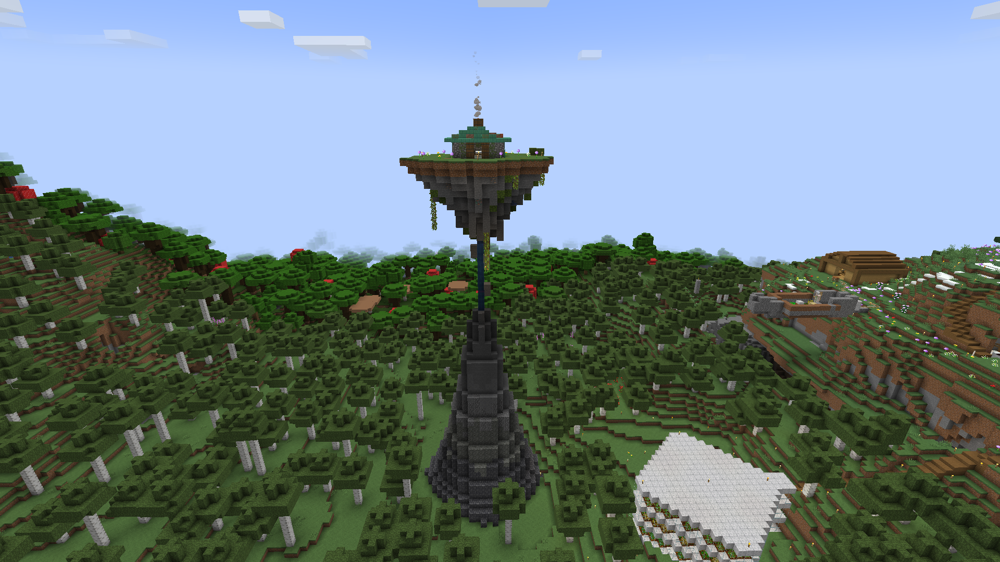
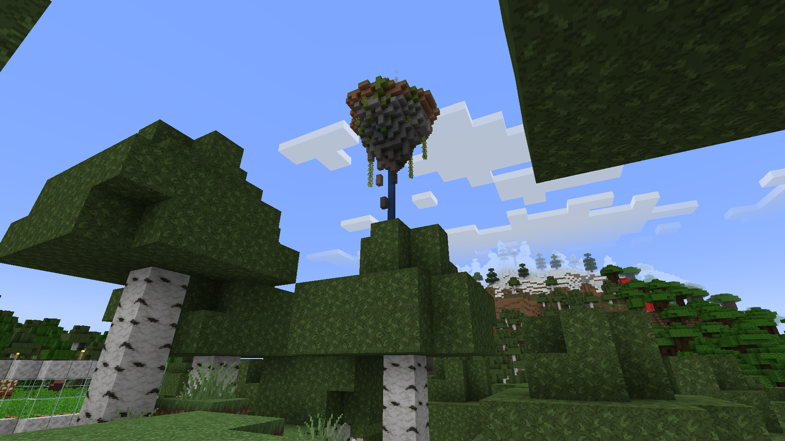
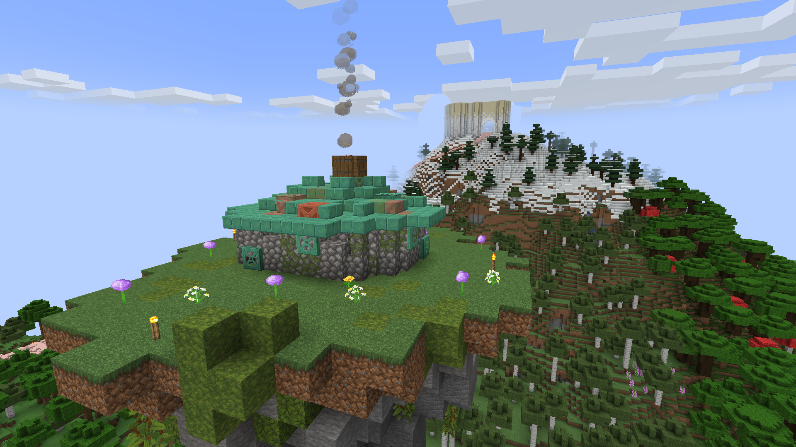
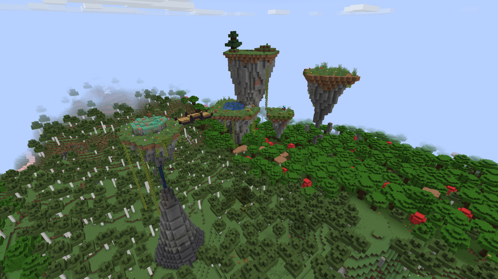
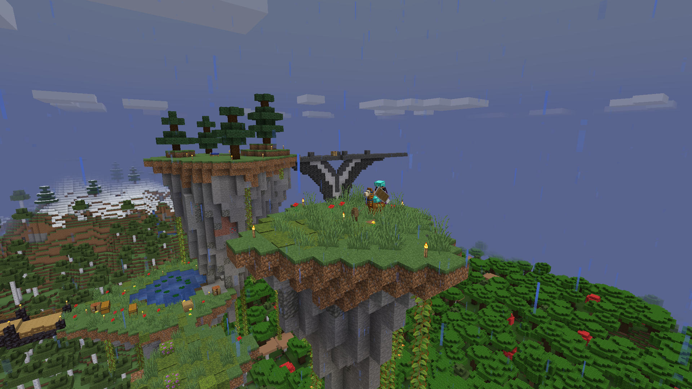
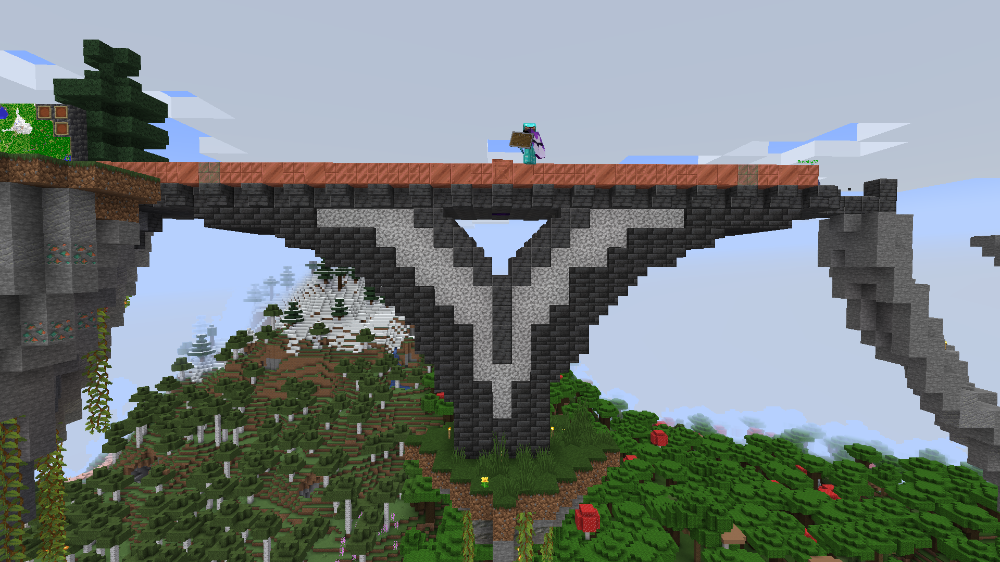
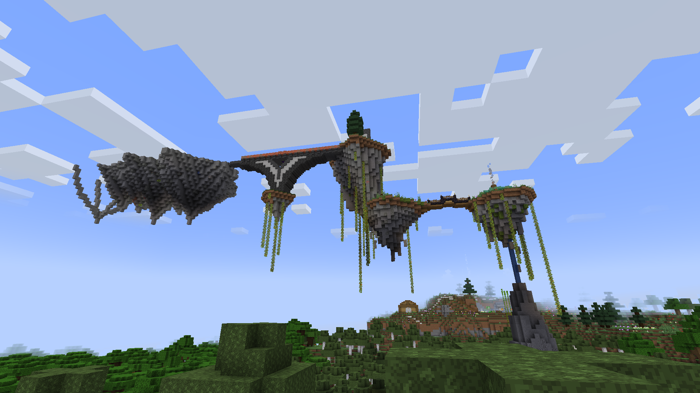

Started: 1st November 2024
This is my first base on the here we go again realm. It started with one small island with a bubble elevator. With my first house built on top.



As I played more, I added a bridge to a second island and then a cave system. Which has been filled with all sorts of ores, vines and a staircase.


I then decided that I would add another bridge to the biggest island of them all and finally the neather portal donut ring



